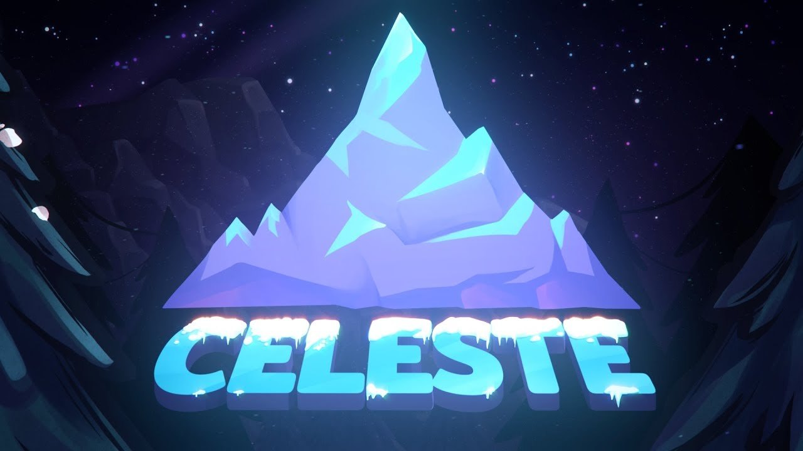

🍓 Een praise voor Celeste!
Celeste is een game gemaakt door "Matt Makes Games Inc." Het is een game over een berg beklimmen en daarmee over je depressie heen komen, maar in realiteit zit er veel meer achter. In dit artikel kom je meer te weten over je favoriete roodharige platforming character.
Matt Thorson kwam met het idee voor Celeste toen hij door een zware periode van depressie en anxiety ging, voor hem was Celeste een breekpunt omdat hij zijn gevoelens onder ogen kwam. Dit process was natuurlijk pijnlijk voor hem aangezien dit zware onderwerpen zijn. Hierover zei Matt:
“If you’re making a game about anxiety and depression, it felt like to us that we needed to show the same kindness to the player that we want to show ourselves.”
Uiteindelijk als je de berg helemaal hebt beklommen vind je jezelf weer helemaal terug, het hele concept achter de berg is dat het een challenge is om jezelf onder ogen te zien al helemaal al je gevoelens. Terwijl je de berg beklom heb je ook vrienden gemaakt, deze characters vind je terug in the epilogue met een leuke eind scene.
Hier kun je de game zelf kopen als je dat zou willen!
Celeste kopen via Steam!Dit artikel was geschreven als een school project.